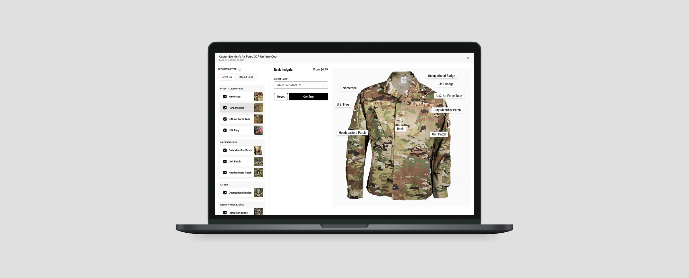
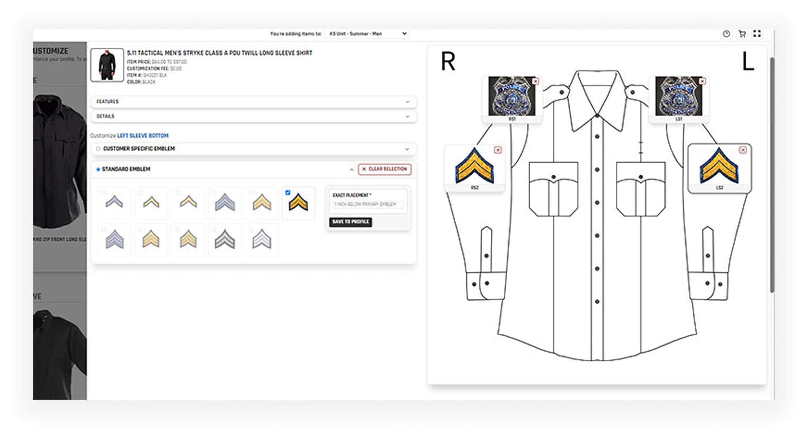
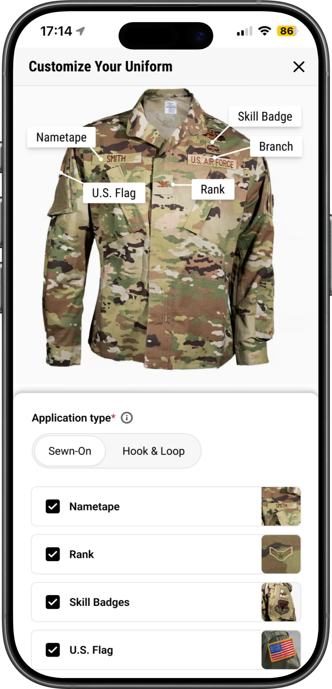
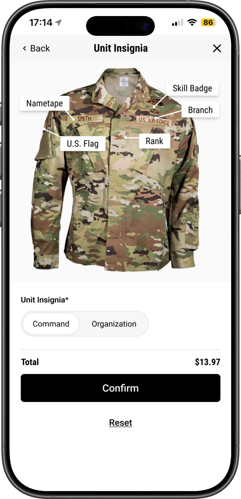
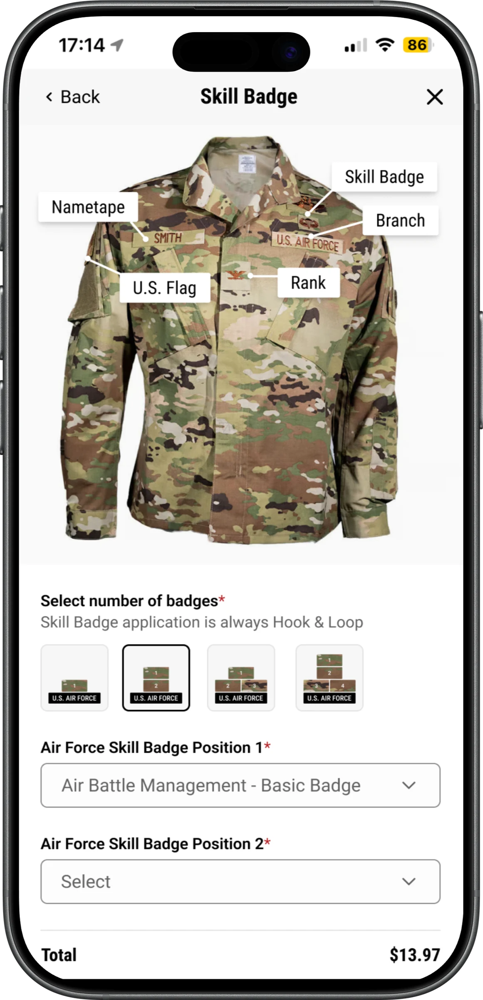
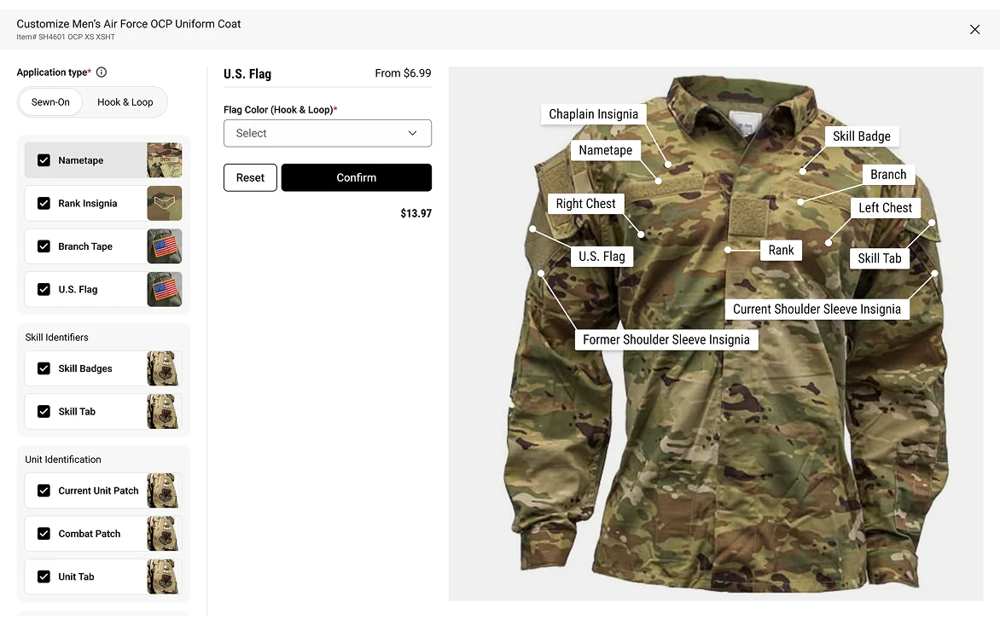
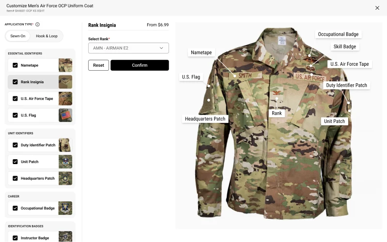

Nirvana · Part II
Meditation that adapts to how you feel
The same idea in a different domain. Instead of presenting a library, the system asks two questions and returns one practice, with its reasoning stated.
Galls · B2B e-commerce configuration · Shipped
Agency compliance rules, embroidery logic and placement standards for U.S. Army and Air Force buyers were spread across several pages. Buyers had to commit to choices before they could see the result. We pulled the whole configuration into one screen.

01 Outcome first
+22%
more orders included customisation
26%
faster to configure an order
+17%
more customisable orders reached checkout
MEASURED. Production analytics, comparing the two quarters after launch against the two before, on the same product set.
02 Context
Galls' Uniform Service Program supplies agencies, not individuals. A single order carries agency compliance rules about what insignia may appear where, embroidery logic that varies by garment and thread, placement standards written by the branch rather than the retailer, and bulk quantities across dozens of personnel.
The site handled all of this by turning every possible combination into its own product listing. A different nameplate, rank, patch or placement meant a different item to find. The buyer's job was to hunt down the right set and hope it added up correctly.
That framing was the real problem. This was never a catalogue to browse. It was a product to configure, and it had been built as the wrong one.

03 The problem
A buyer picked the garment on one page, the insignia on another, the placement on a third and the quantity on a fourth. Nothing showed the finished uniform until the cart, and nothing warned them if a combination broke an agency rule.
Two groups paid for that, in different ways.
04 Directions considered
The obvious move was a better options panel. It would have been faster to build and it would not have worked, because the problem was never that the options were badly presented.
Better grouping, better labels, sticky summary. Cheapest option and the one most people expected. Rejected because it preserves the actual failure. Every decision still competes for attention with every other decision, and a buyer configuring for a whole unit is not short of information, they are short of sequence.
Rejected: treats the symptomSequence the decisions properly, one page each. Solves ordering, but keeps the context switching that was already the expensive part, and makes reviewing or revising an earlier choice a navigation task. On bulk orders where buyers routinely go back three steps, that is a worse trade than it looks.
Rejected: sequence without continuityA single overlay that holds the entire configuration, sizing, fabric, identity, branding, grouped into logical clusters and stepped through without leaving the view. The buyer keeps the assembled garment in sight the whole time, validation runs live, and nothing is committed until the whole thing resolves.
Built05 What we built





06 Honest limits
Next case study
Nirvana · Part II
The same idea in a different domain. Instead of presenting a library, the system asks two questions and returns one practice, with its reasoning stated.
The rule model went through four versions before it held. Happy to walk through it, and through what I'd change now.
Or copy it: gokhalesumeet2@gmail.com